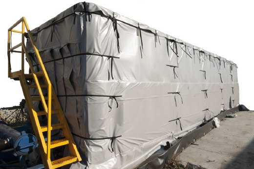
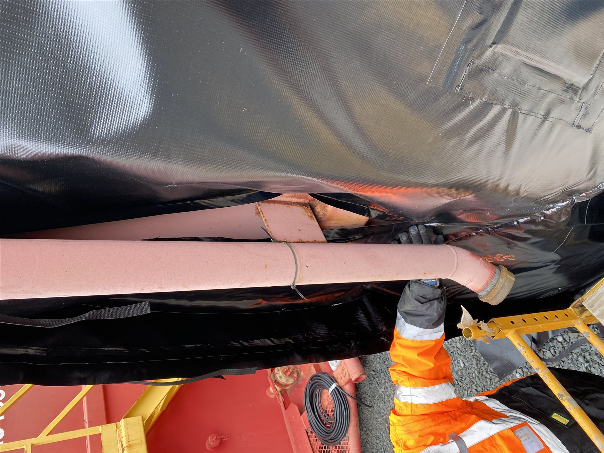
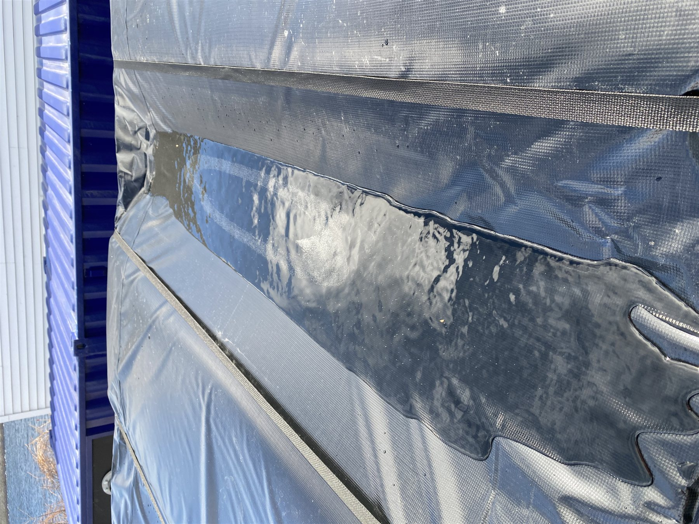

Keeping frac tank contents from freezing or thickening on active oilfield and industrial sites — how the blanket system works, and what to check before you order one.
Why It Matters
Frac tanks store water-based fracturing fluid, produced water, or additives on active sites — often outdoors, often on a schedule that can't slip. When the contents get cold enough to freeze or thicken, flow stops, and every hour of downtime is lost production. A frac tank heating system exists to solve exactly one problem: keep the contents workable, regardless of what the weather is doing outside the tank.
Powerblanket's approach wraps the whole tank — sides, ends, and top — in a system of heated and insulated blankets, rather than relying on a single internal heating element. Spreading the heat across the entire surface means no single spot on the tank ever gets particularly hot, which matters when the contents or the tank itself can't tolerate concentrated heat.
Anatomy

Exact model, overlap, and power requirements depend on your specific tank — a Powerblanket engineer confirms these during review. Every blanket ships with a resistance-test procedure so you can verify it's undamaged before and after each season.
A Real Installation
One real, publicly-documented example of a frac tank heating system doing its job — not a hypothetical.
Case Study
URS Corporation needed to keep groundwater collected in frac tanks from freezing during a deactivation and demolition project at the Knolls Atomic Power Laboratory in Niskayuna, NY. Powerblanket's custom design team delivered a frac tank heating system in time for winter — it installed quickly despite rainy weather and protected the contents from freezing throughout the project.
Powerblanket supplied the frac tank heating system currently working on-site. The heating system installed quickly despite rainy weather, and has protected the contents from freezing. Edward Skuchas, Engineer with URS
From the Field


Still Have Questions?
If you have additional questions after reading this guide, a real Powerblanket applications engineer will answer them personally — no pressure, no obligation.
Ask an Engineer